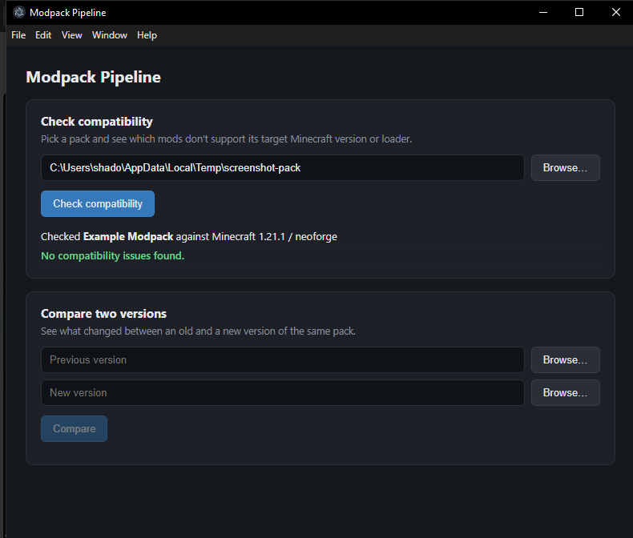

A tool for Minecraft modpack maintainers.
Diffs two versions of a modpack and checks every mod against the pack's target Minecraft version and mod loader, using the Modrinth and CurseForge APIs — so you catch compatibility breaks before shipping a release, not after.
Windows: desktop app Mac / Linux: command line
.mrpack files
On Windows, modpack-pipeline ships as a desktop app. Pick a pack folder
or .mrpack file with a normal file browser, click a button,
read the results — nothing to type.

Mac and Linux are command-line only for now — a desktop app for those is on the roadmap, not yet built.
npx modpack-pipeline diff ./pack-v1 ./pack-v2 npx modpack-pipeline check ./pack
Status: in active development. Interfaces and output formats may still change between versions.
No warranty. This tool is provided as-is, with no guarantee it catches every compatibility problem a pack can have. It flags what the Modrinth and CurseForge APIs report; it doesn't launch Minecraft or test a pack in-game. Always test a pack yourself before shipping a release to players.
Data: modpack-pipeline reads your pack files locally and queries the public Modrinth and CurseForge APIs to check mod compatibility. It doesn't collect, store, or transmit your pack, your files, or any personal data anywhere else.
Not affiliated with Mojang, Microsoft, Modrinth, or CurseForge/Overwolf. "Minecraft" is a trademark of Mojang Studios. This is an independent, unofficial tool.
Licensing: pricing and licensing terms will be shown at checkout. Questions before buying — use the contact on the purchase page.